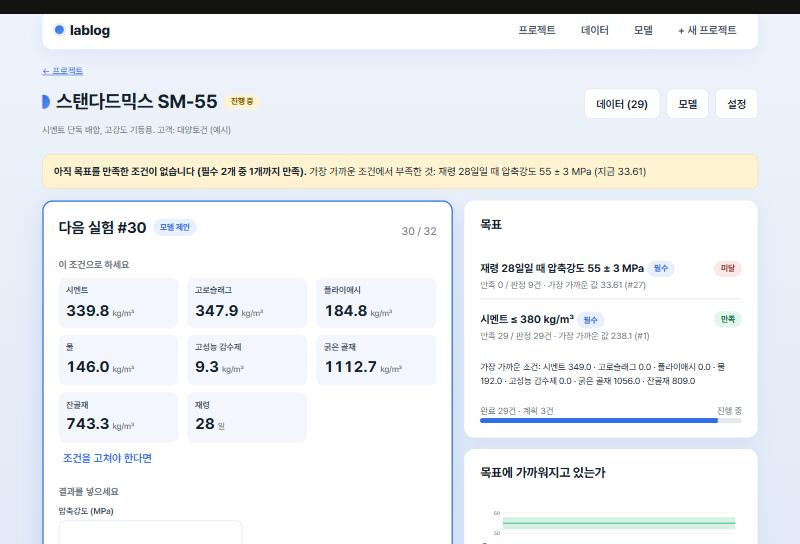
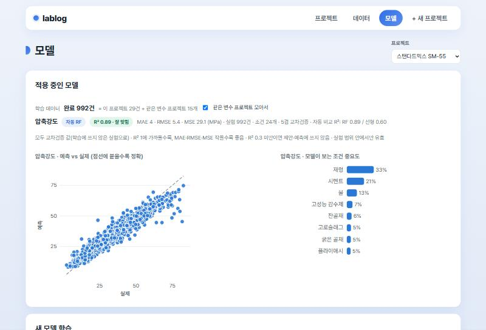
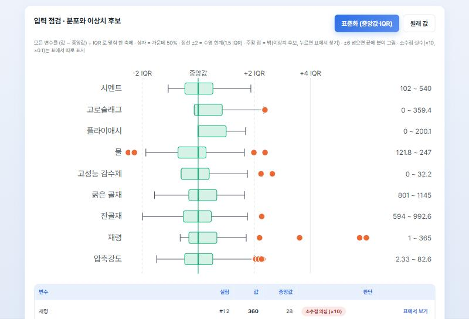
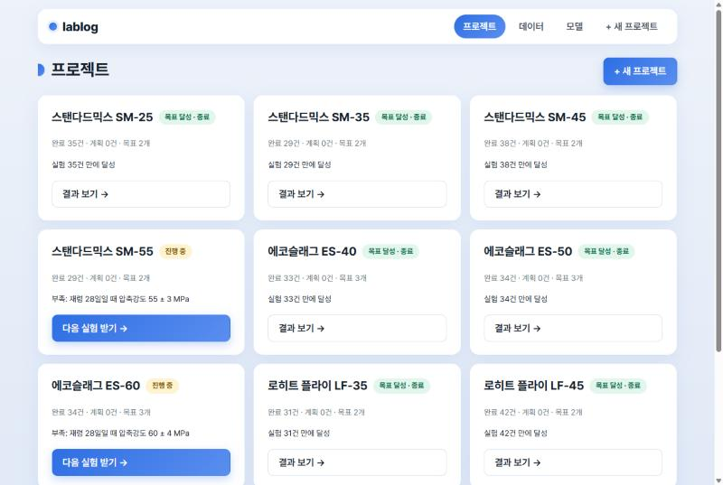

lablog · 실험 관리 + 머신러닝 시뮬레이션
R&D Lab Notebook
흩어진 실험을 한 곳에 모으고,
조건을 머신러닝으로
예측·시뮬레이션한다
Report 김경제Time 2026.11Data UCI Concrete 1,030건



현재 상황과 이상적인 상황의 차이에서 출발한다

모으는 기능 하나, 시뮬레이션하는 기능 하나
조건·결과만 같은 틀로 기록한다. 입력·측정 시점·출력·목표(목표값 ± 허용)만 적으면, 프로젝트가 달라도 한 표에 쌓여 바로 비교·학습할 수 있다.
쌓인 데이터로 머신러닝을 학습한다. 조건을 넣으면 결과를 예측하고, 목표를 만족할 조건을 제안한다. 목표를 달성하면 실험이 끝난다.
프로젝트 · 데이터 · 모델, 탭 셋
한 표에 모인 실험, 예측 정확도, 목표 달성
달성하면 종료. 진행 중인 3개는 머신러닝이 목표 만족 확률이 큰 조건을 제안한다.
숫자 조건만 다룬다. 기재 종류 같은 문자 조건과 이름이 다른 변수는 아직 모으지 못한다.
실험한 범위 안에서만 유효하다. 확률은 보장이 아니고, 제안도 실험으로 확인해야 한다.
문자 조건과 변수 별칭을 넣어 더 많은 프로젝트를 한 모델로 학습한다.
실제 팀 데이터로 정확도를 확인하고, 브라우저 저장을 넘어 팀이 공유하는 저장소로 간다.
브라우저에서 바로 써 볼 수 있습니다. 처음 열면 예시 프로젝트 12개가 들어 있습니다.
공개 데이터: UCI Concrete Compressive Strength (Yeh 1998, CC BY 4.0) · 테스트 25개 · Vercel 배포